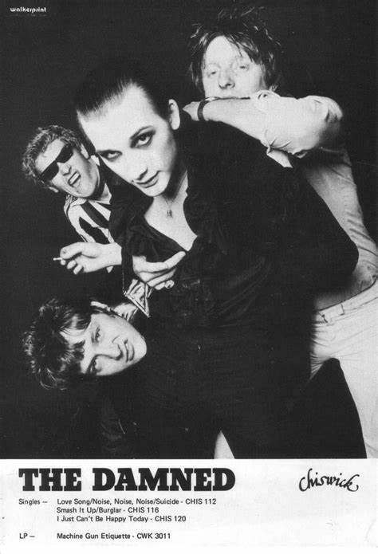
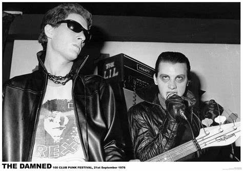
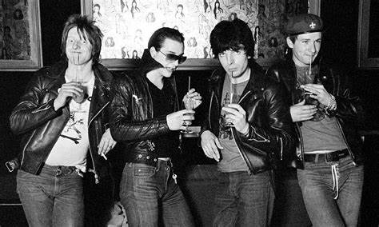

THE DAMNED
Song:Machine Gun Etiquette - The Damned
The Damned are an English rock band formed in London in 1976 by lead vocalist Dave Vanian, guitarist Brian James, bassist (and later guitarist) Captain Sensible and drummer Rat Scabies.
They were the first punk band from the United Kingdom to release a single, "New Rose" (1976),release a studio album, Damned Damned Damned (1977)and tour the United States.
Nine of the band's singles charted on the UK Singles Chart Top 40.
The band briefly dissolved after Music for Pleasure (1977), the follow-up to their debut studio album, was critically dismissed.
They quickly reformed without Brian James and released Machine Gun Etiquette (1979).
In the 1980s, they released four studio albums: The Black Album (1980), Strawberries (1982), Phantasmagoria (1985) and Anything (1986),
which saw the band moving toward a gothic rock style.
The latter two albums did not feature Sensible, who had left the band in 1984.[13] In 1988, James and Sensible rejoined to play a series of reunion gigs, one of which was released the next year as the live album Final Damnation (1989).
Their fast-driven punk rock has been cited for influencing and shaping the emergence of hardcore punk in the late 1970s and early 1980s in the United Kingdom and the United States.
The Damned again reformed for a tour in 1991.
In 1995, they released a new studio album, Not of This Earth, which was Scabies's last with the band.
This was followed by Grave Disorder (2001), So, Who's Paranoid? (2008) and Evil Spirits (2018), their first studio album in the Official Charts top-10 list, landing at No. 7.
Their most recent album, Darkadelic, was released in 2023.
Despite experiencing numerous lineup changes, the formation of Vanian, Sensible, keyboardist Monty Oxymoron, drummer Pinch and bassist Stu West had been together from 2004 until 2017,when West left the band and former bassist Paul Gray rejoined.
In 2019, drummer Pinch left the band, and in February 2022 he was replaced by Will Taylor, who left in November 2023, when Scabies rejoined.
As one of the first gothic rock bands, the Damned, featuring lead singer Vanian's baritone singing, dark lyrics and vampire-themed costume, were a major influence on the goth subculture